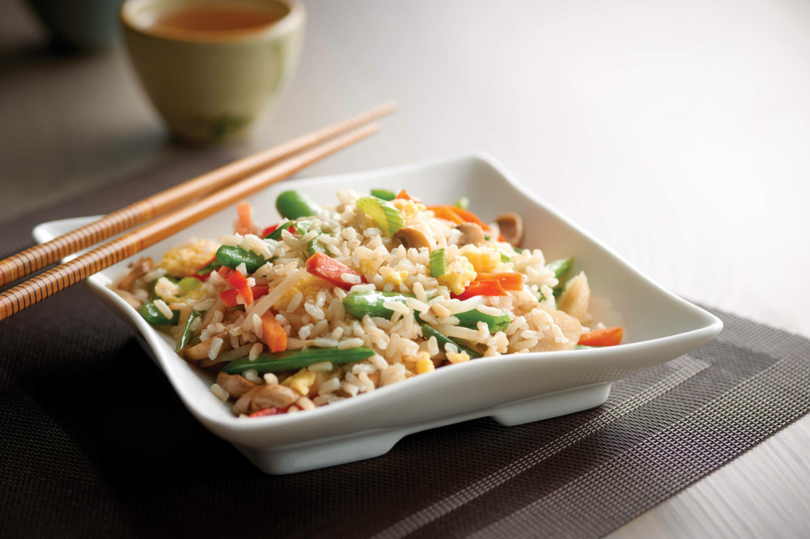

Fried Rice Recipe

Fired rice is a chinese dish that goes well with almost every main dish like chilli paneer. It's a great dish to make use of remaining rice from last night.(In most cases, the last night rice are preferred over newly cooked rice)
Fried rice can be a great meal with other dishes, as it is not difficult to prepare and you can customize the recipe as of your liking.(Maybe add some MSG? Uncle Roger will approve. Fleeeyooo!)
Ingredients - for 2/3 serving
- Cooked white rice - 350g
- Cooking oil (refined or vegetable) - 2 tablespoon
- Onion - 1 of small size (finely chopped)
- Carrot - 1 of medium size(chopped into small dice)
- Green onion - 2 (thinly sliced)
- Frozens peas - 100g
- Garlic cloves - 2 of medium size (minced)
- Fried rice masala - 20g
- Soy sauce - 2 teaspoon
Steps
- If you are using cold cooked rice of last night, break them up into grains in a separate bowl.
- Add 1/2 tablespoon oil into cooking pan and heat it up until it is smoky on medium flame. Then add half of your rice into it. After adding the rice, fry the rice while stirring and tossing. Cook for 3 minutes until the rice have turned brown. When that batch of rice is cooked, store it in a separate bowl and repeat this step with 1/2 tablespoon oil and remaining rice.
- Transfer all the rice back into the pan and make a space in the middle.
- Add 1/2 tablespoon oil to space and add onion, carrot, green onions and garlic.
- Stir fry them until lightly softened for about 1 minute.
- Add soy sauce and fried rice masala and toss to coat.
- Combine back the rice with vegetable and add 1/2 remaining tablespoon.
- Add frozen peas and continue to toss and stir until peas are no more frozen and every grain of rice is separate.
- Serve immediately.